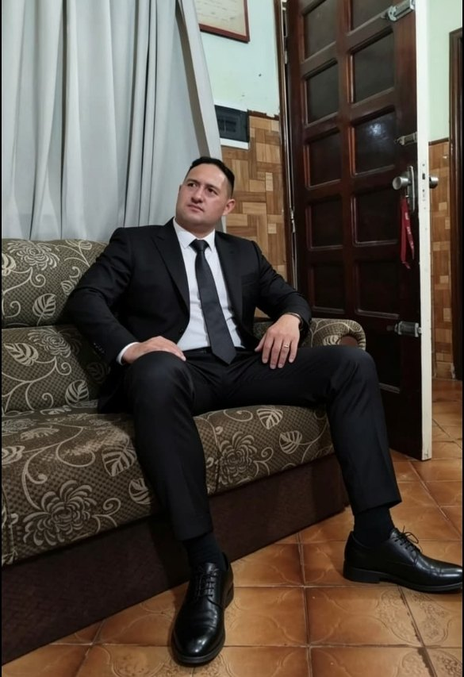

San Lorenzo · Paraguay
Asesoría legal clara, cercana y comprometida con su caso.
El Estudio Jurídico Abog. Blas Santander acompaña a personas y empresas en San Lorenzo y alrededores en sus procesos legales, con atención directa, sin letra chica y consultas a domicilio.
Más de 10 años de experiencia San Lorenzo y todo el Departamento Central Lunes a sábados, de 7:00 a 17:00

Sobre mí
Quién lo va a representar
Blas Santander es abogado con más de diez años de ejercicio, acompañando a personas y familias de San Lorenzo y de todo el Departamento Central en sus problemas legales. Atiende personalmente cada caso, explica cada paso en términos claros y coordina consultas a domicilio cuando hace falta.
Abog. Blas SantanderSan Lorenzo · Departamento Central
Áreas de práctica
En qué podemos ayudarlo
Diez áreas del derecho, atendidas en San Lorenzo y en todo el Departamento Central. Toque cualquiera para consultar por WhatsApp.
Derecho Laboral
Consultas y representación en conflictos laborales, tanto para trabajadores como para empleadores. Indemnizaciones, despidos, contratos de trabajo.
ConsultarDerecho de Familia
Divorcios, pensiones alimenticias, tenencia y régimen de visitas. Acompañamiento con sensibilidad en momentos difíciles.
ConsultarDerecho Penal
Defensa y representación legal en causas penales, con atención inmediata cuando el tiempo es crítico.
ConsultarDerecho Civil
Contratos, deudas y cobros, daños y perjuicios, desalojos, arrendamientos y cartas documento.
ConsultarDerecho Inmobiliario
Usucapión, compraventa de inmuebles, escrituración, títulos de propiedad y loteos.
ConsultarAccidentes de Tránsito
Reclamos por accidentes, seguros, lesiones y daños a vehículos, incluidos los juicios contra aseguradoras.
ConsultarSucesiones y Herencias
Declaratoria de herederos, testamentos, división de bienes y herencias en conflicto.
ConsultarComercial y Empresarial
Constitución de empresas (SRL, SA), contratos comerciales, deudas entre empresas y quiebras.
ConsultarDeudas y Cobranzas
Pagarés, cheques sin fondos, deudas bancarias, reclamos a financieras y negociación con acreedores.
ConsultarDerecho Administrativo
Trámites con el Estado, multas, licitaciones y recursos contra organismos públicos.
ConsultarPor qué elegirnos
Por qué trabajar con nosotros
Atención directa
Su caso lo lleva el abogado. Habla con él desde el primer mensaje y en cada etapa del proceso, sin intermediarios.
Sin letra chica
Le explicamos en términos claros qué se puede hacer, qué no, y qué pasos implica cada opción antes de avanzar.
Consultas a domicilio
Si no puede acercarse al estudio, coordinamos la consulta donde usted esté, en San Lorenzo y alrededores.
Reseñas
Lo que dicen quienes ya pasaron por acá
Opiniones publicadas por clientes en el Perfil de Empresa del estudio en Google. Ninguna está escrita por nosotros: se pueden verificar una por una.
2 opiniones en Google · Perfil verificado
Gracias por ayudarme en los casos judiciales, hubo buen acompañamiento desde principio al fin, EXCELENTE
Respuesta del estudiomuchas gracias, estamos a disposición
Buen servicio de abogado
Presencia en Google
Cuando alguien busca «abogado en San Lorenzo» en Google, el estudio aparece entre los primeros resultados del mapa. No es casualidad: es un perfil trabajado, con los datos al día, las áreas cargadas y reseñas reales de clientes.
¿El estudio lo acompañó en un caso? Contar su experiencia toma menos de un minuto y ayuda a la próxima persona que esté buscando con quién hablar.
Dónde atendemos
San Lorenzo y todo el Departamento Central
El estudio está sobre Av. Moisés Bertoni y, en San Lorenzo, y atiende casos de todo el Departamento Central. Si no puede acercarse, coordinamos la consulta a domicilio.
- San Lorenzo
- Fernando de la Mora
- Capiatá
- Luque
- Ñemby
- Lambaré
- San Antonio
- Villa Elisa
- Mariano Roque Alonso
- Limpio
- Itauguá
- Areguá
- Ypacaraí
- Ypané
- Guarambaré
- Itá
- J. Augusto Saldívar
- Villeta
- Nueva Italia
- Asunción
¿Su caso es de otra ciudad? Consúltenos igual: muchos trámites se resuelven sin que usted tenga que viajar.
Proceso
Cómo trabajamos
Cuatro etapas, explicadas de antemano, para que sepa siempre en qué punto está su caso.
Primer contacto
Nos escribe por WhatsApp y nos cuenta su situación, con sus palabras y sin formalidades.
Análisis del caso
Se revisa la documentación y se evalúan las opciones legales disponibles.
Estrategia
Se define el camino a seguir, explicado en términos claros, con los tiempos y pasos esperables.
Acompañamiento
Seguimiento constante durante todo el proceso, con comunicación directa en cada etapa.
Preguntas frecuentes
Preguntas frecuentes
El costo se informa al coordinarla. Escríbanos por WhatsApp y le contamos los detalles según su caso.
Atendemos en San Lorenzo y en todo el Departamento Central. También coordinamos consultas a domicilio.
Sí. Es la vía más rápida y le responde el abogado directamente, sin intermediarios.
Depende del tipo de caso y de la vía que se elija. En la primera consulta le damos un plazo estimado realista y le explicamos qué puede acortarlo o alargarlo.
El horario de atención es de lunes a sábados, de 7:00 a 17:00. Si escribe fuera de ese horario, le respondemos apenas retomamos.
Contacto
Hablemos de su caso
Cuéntenos su situación y le respondemos a la brevedad. La primera consulta es el paso para entender sus opciones legales. También coordinamos consultas a domicilio.